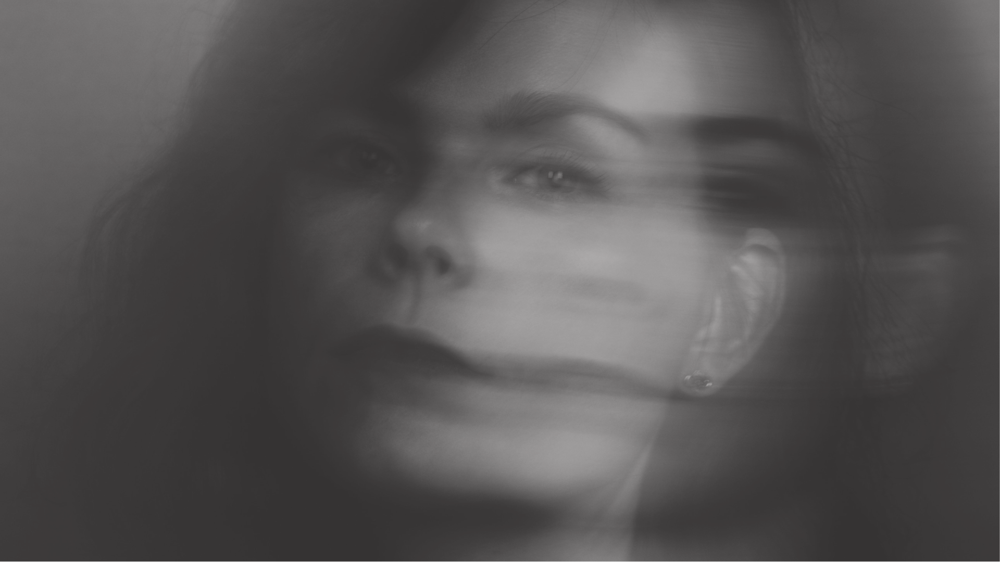

I'm a creative problem solver, designer, intuitive entrepreneur and nomadic soul with roots in Estonia. My journey in the creative and tech world began unexpectedly and unconventionally. In 2020, after not being accepted to HR master studies and feeling lost about my future, I was fortunate to join a state-funded 3-month web development bootcamp in France, where I was living at the time. This serendipitous opportunity changed everything.
I fell head over heels in love with front-end web development. For about a year, I coded websites day and night, completely obsessed with the problem-solving challenges it provided. The bootcamp ignited a passion I never knew I had. When I returned to Estonia and started applying for web development jobs, an unexpected twist occurred - there was a higher demand for designers. I was offered a design internship instead, which opened up a whole new world of creativity for me.
Since then, I've immersed myself in the IT sector, naturally gravitating towards design as my skills and passions evolved. In 2021, I took the leap into freelancing, combining my tech skills with my newly discovered creative instincts to serve clients across various industries. Throughout this journey, I've learned to live and work entirely by my intuition, embracing change and taking risks. I deeply value freedom and independence in both my life and work, which has shaped my path as a freelancer.
My story is one of exploration, where the boundaries between career and personal life merge into an interconnected journey. I view entrepreneurship as a spiritual path that catalyzes transformation, personal growth, and self-discovery. This way of seeing my work infuses every project I undertake, bringing a unique perspective and depth to my work with clients.
My nomadic spirit and beautiful love stories have taken me on a journey through Europe and beyond. I've lived in Sweden for four enriching years, found a second home in France, enjoyed the tropical beauty of French Polynesia, and explored the spiritual traditions of Bali. Each of these places I've called home has shaped how I see the world and influenced my creative approach.
At the heart of my journey lies Paris - a city that resonates deeply with my essence and has become a second home. The poetic beauty of Parisian life continually stirs my imagination, while its bustling streets, timeless charm, and elegance offer constant inspiration. This vibrant city has become an integral part of my life, fueling both my personal growth and creative endeavors.
Yet, my story is one of duality. I live between Paris and Estonia, embracing the unique blend these two worlds offer. While Paris nourishes my creative spirit with its rich culture and artistic heritage, Estonia grounds me with its deep connection to nature and spirituality. This dual residence allows me to draw from both the sophisticated urban energy of France and the serene, introspective quality of my Estonian roots.
My passion for French language and culture has become an integral part of who I am, shaping my approach to creativity and life. At the same time, my Estonian background provides a vital counterbalance, offering a different perspective and approach to the world. It's this unique combination that shapes my worldview and enriches my interactions, bringing a diverse cultural understanding to everything I do.
This lifestyle keeps me inspired, constantly exposing me to new ideas and ways of thinking. It's reflected in my artistic sensibilities - a deep appreciation for both the subtle and vibrant aspects of life. I'm drawn to the interplay of light, color, and emotion, often capturing moments in abstract or impressionistic ways.
I believe in the power of art and design to communicate beyond words. My approach is deeply attuned to the beauty and complexity of the world, finding the poetic in the everyday. This sensibility informs not just my personal expression, but significantly influences my professional work in design and creative problem-solving.
At the core of my work is a deep sense of service to creative entrepreneurs and artists. I feel a profound connection to creative spaces and energies. This drives my mission to support innovative minds and artistic spirits to bring their unique visions to life.
This following text is from Richard Rudd, founder of a system that is very close to my heart "Gene Keys". This fraction is from the second vocation line description that perfectly summarises why I do what I do:
"There is nothing more exciting than when you find an idea, or a product, or a person worth guiding out of obscurity into the light. You are always looking for that pure transmission that you sense will have the maximum beneficial impact on the world. It has to be something you feel impassioned about, and that fills you with life. It will also be a challenge at times, because you are pitted against the collective Shadow consciousness, but as a second Line, that is why you live – to dance with the devil and to outwit the enemy – not because you crave recognition, but simply because you love the thrill of the ride!."
Download my Human Design chart from here